Bienvenue Sur Medical Education
Fractures : cou-de-pied
Spécialité : traumatologie /
Présentation clinique / CIMU
SIGNES FONCTIONNELS
-
Douleur
-
Impotence fonctionnelle totale
CONTEXTE
Circonstances de survenue
- Choc direct latéral
-
Traumatisme indirect en inversion (adduction, supination, extension du pied) :
- en équin (extension du pied ; atteinte marginale postérieure du tibia)
- en varus (adduction de la cheville et supination du pied ; atteinte malléolaire)
-
Traumatisme indirect en éversion (abduction, pronation, flexion du pied) :
- en flexion (atteinte marginale antérieure du tibia)
- en valgus (abduction de la cheville et pronation du pied => fracture du péronée au-dessus de l'articulation tibio-péronière inférieure, fracture de la malléole médiale)
EXAMEN CLINIQUE
- Œdème
- Palpation douloureuse
- Le diagnostic est évident lorsque la fracture est déplacée avec cheville déformée, oedème important et impotence fonctionnelle totale
- Le diagnostic de certaines fractures non déplacées peut être méconnu si l'impotence fonctionnelle est peu importante, si l'examen clinique est succinct et si l'on applique les règles d'Ottawa (pas de radio systématique dans les traumatismes de la cheville)
- Toute fracture isolée de la malléole interne doit conduire à palper la diaphyse péronière et à demander une radiographie de la jambe à la recherche d'une fracture de Maisonneuve
- Troubles vasculo-nerveux d'aval (coloration et temps de recoloration cutanée des orteils, mobilité et sensibilité)
_913
- - -
Examen clinique de cheville et de pied
Fractures de la malléole interne (médiale)
Fractures de la malléole externe (latérale)
Fractures de la malléole postérieure
Fractures bimalléolairesSignes paracliniques
Diagnostic étiologique
FRACTURES MALLEOLAIRES
- 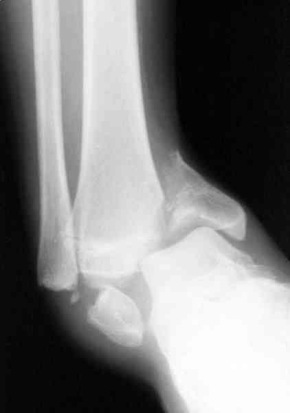 _431 Photo Fracture bimalléolaire droite sous-ligamentaire
- 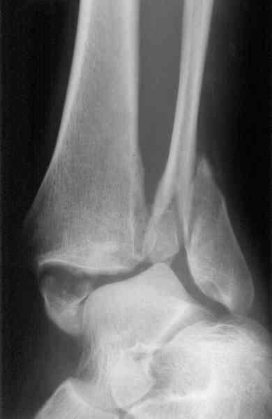 _432 Photo Fracture bimalléolaire gauche inter-ligamentaire
- 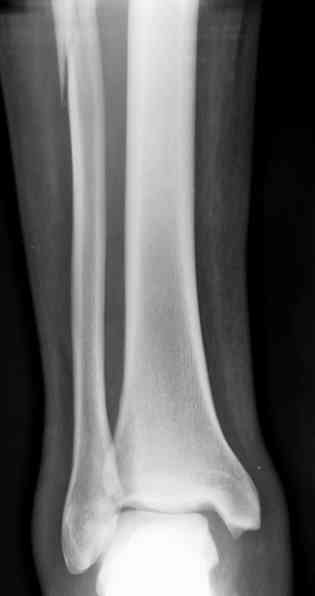 _433 Photo Fracture de Maisonneuve
- 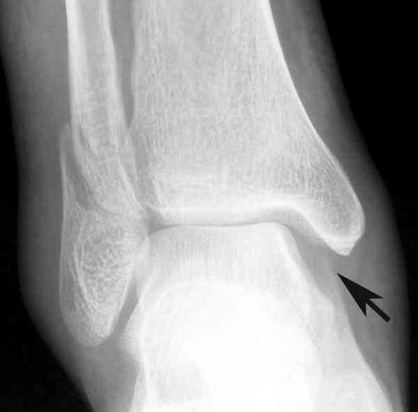 _434 Photo Fracture bimalléolaire
Fractures trimalléolaires et équivalents
- Malléole interne ou ligament collatéral médial, plus malléole externe, plus malléole postérieure
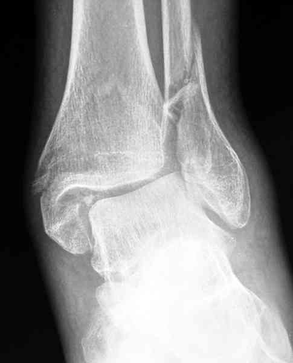 _435 Photo Fracture trimalléolaire : incidence de face
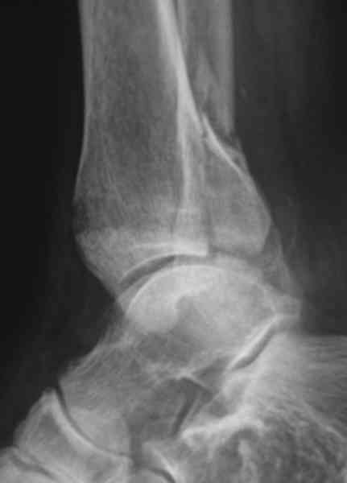 _436 Photo Fracture trimalléolaire : incidence de profil
Fractures du tubercule de Chaput (tubercule tibial sur lequel s'insère le ligament tibio-péronier antérieur et inférieur)
FRACTURES DU PILON TIBIAL
Fractures marginales antérieures
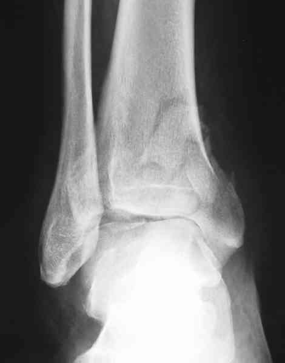 _437 Photo Fracture marginale antérieure du pilon tibial : incidence de face
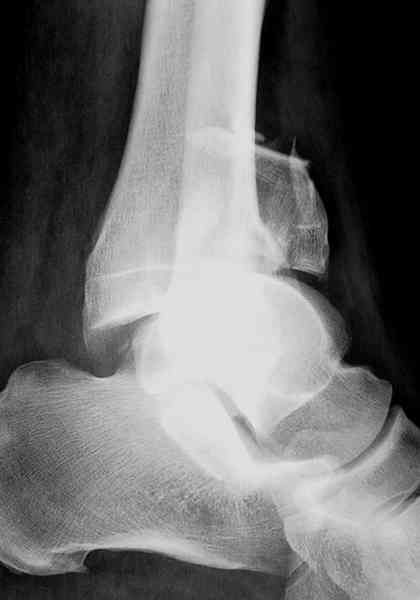 _438 Photo Fracture marginale antérieure du pilon tibial : incidence de profil
Fractures marginales postérieures
Fractures margino-malléolaires antérieures ou postérieures
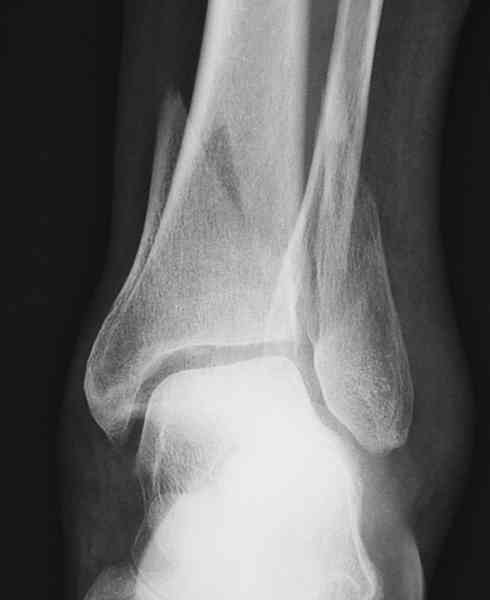 _439 Photo Fracture margino-malléolaire postérieure du pilon tibial : incidence de face
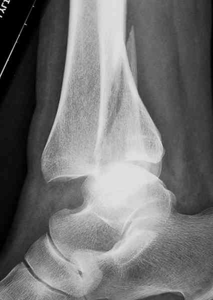 _440 Photo Fracture margino-malléolaire postérieure du pilon tibial : incidence de profil
Fractures bimarginales ou bimargino-malléolaires
- Elles sont souvent associées à une fracture plus ou moins complexe de la malléole externe
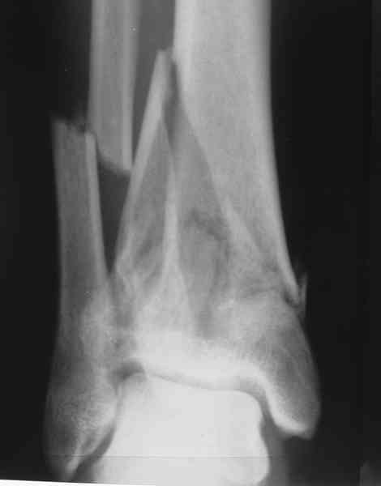 _441 Photo Fracture bimarginale du pilon tibial : incidence de face
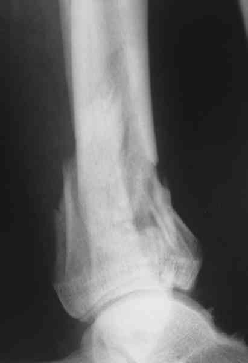
_442
Photo
Fracture bimarginale du pilon tibial : incidence de profil
Traitement
AVANT RADIOGRAPHIES
-
Traitement antalgique fonction de l'intensité douloureuse mesurée par l'EN ou l'EVA
-
Protocole RICE
APRES RADIOGRAPHIES
Ce qui n'est pas chirurgical
-
Toutes les « fissures » et fractures sous-périostées non déplacées :
-
botte plâtrée (ou une résine) :
- traitement le plus fiable et le moins onéreux
- la durée de l'immobilisation peut aller de 45 à 75 jours (45 jours pour une malléole externe et 75 jours pour un pilon tibial)
-
botte plâtrée (ou une résine) :
_876
- - -
Botte pédieuse
_945
- - -
Botte plâtrée
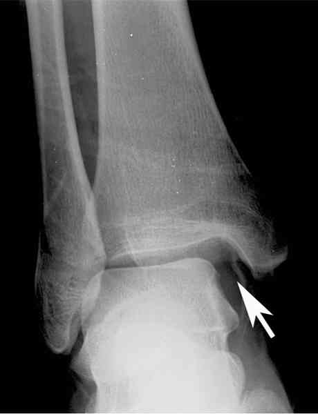
_443
Photo
Diastasis astragalo-malléolaire interne
Ce qui est chirurgical
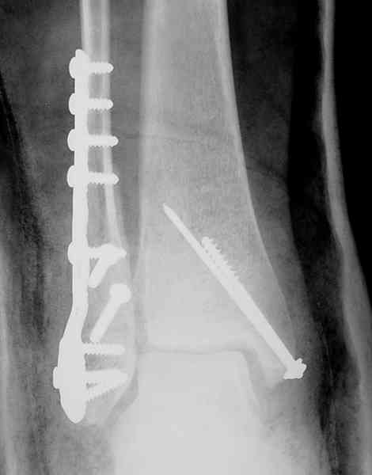
_444
Photo
Ostéosynthèse d'une fracture bimalléolaire : incidence de face
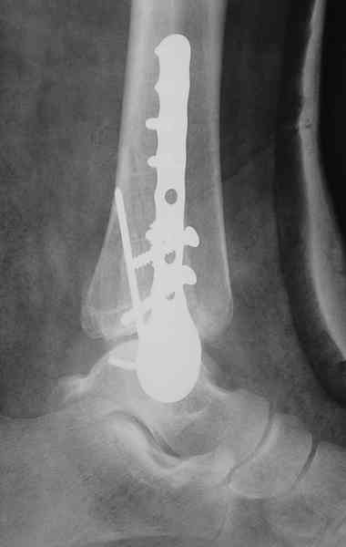
_445
Photo
Ostéosynthèse dune fracture bimalléolaire : incidence de profil
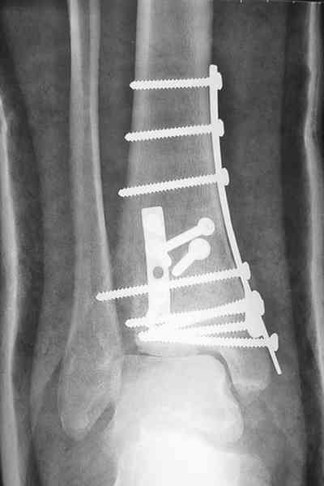
_446
Photo
Ostéosynthèse par plaque en trèfle d'une fracture du pilon tibial : incidence de face
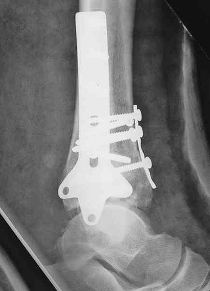
_447
Photo
Ostéosynthèse par plaque en trèfle d'une fracture du pilon tibial : incidence de profil
Premiers gestes devant une fracture-luxation
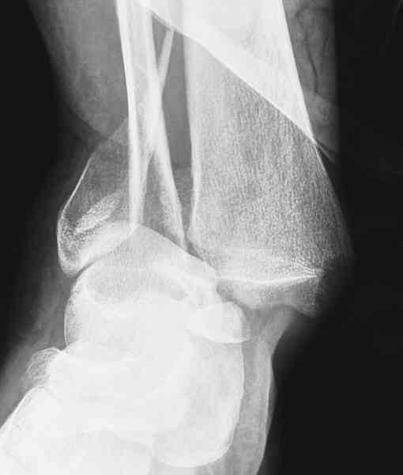
_448
Photo
Fracture bimalléolaire avec luxation tibio-tarsienne : incidence de face
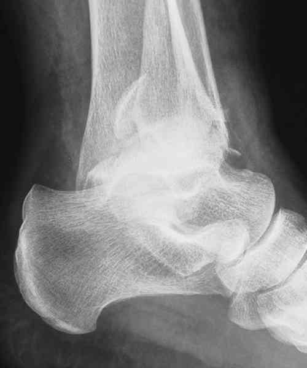
_449
Photo
Fracture bimalléolaire avec luxation tibio-tarsienne : incidence de profil
_876
- - -
Botte pédieuse
_945
- - -
Botte plâtrée
Auteur(s) : Jean-Jacques BANIHACHEMI, Dominique SARAGAGLIA
Surveillance
Devenir / orientation
CRITERES D'ADMISSION
CRITERES DE SORTIE
ORDONNANCE DE SORTIE
RECOMMANDATIONS DE SORTIE
Bibliographie